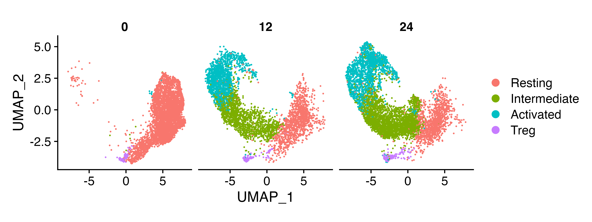
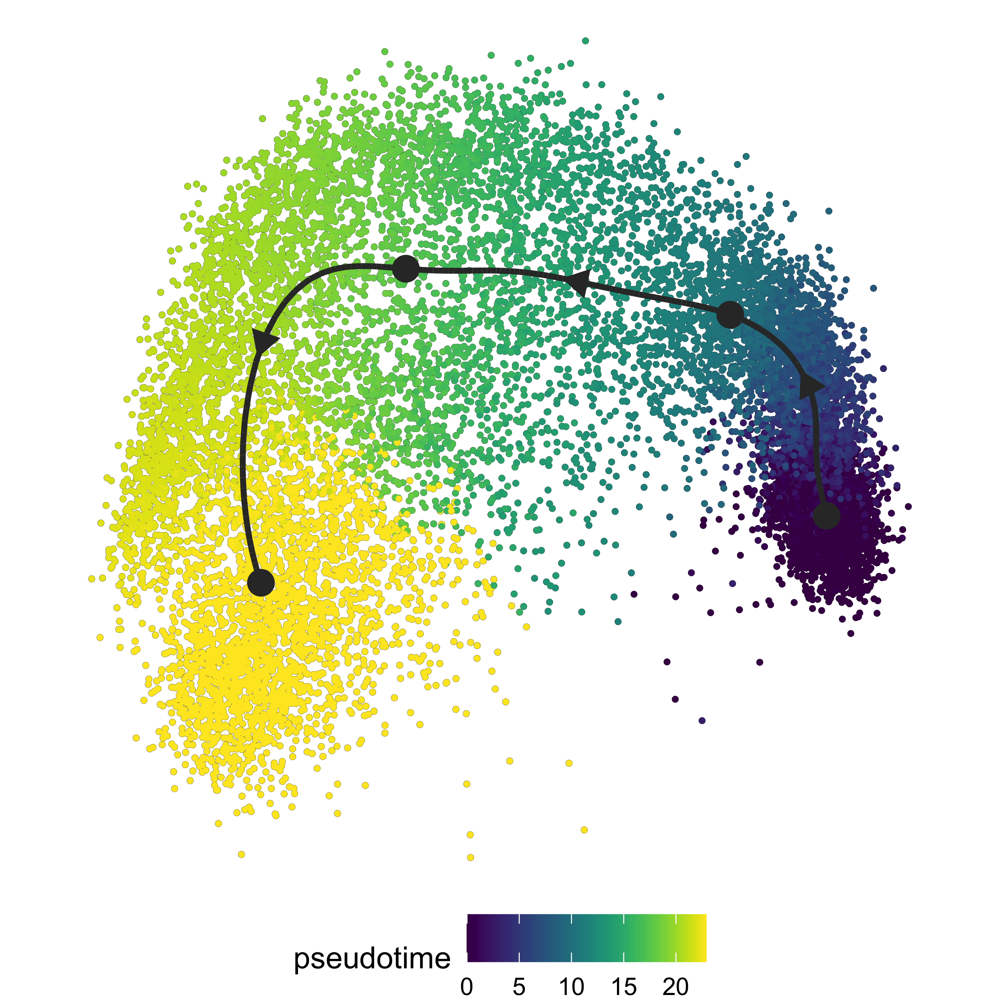
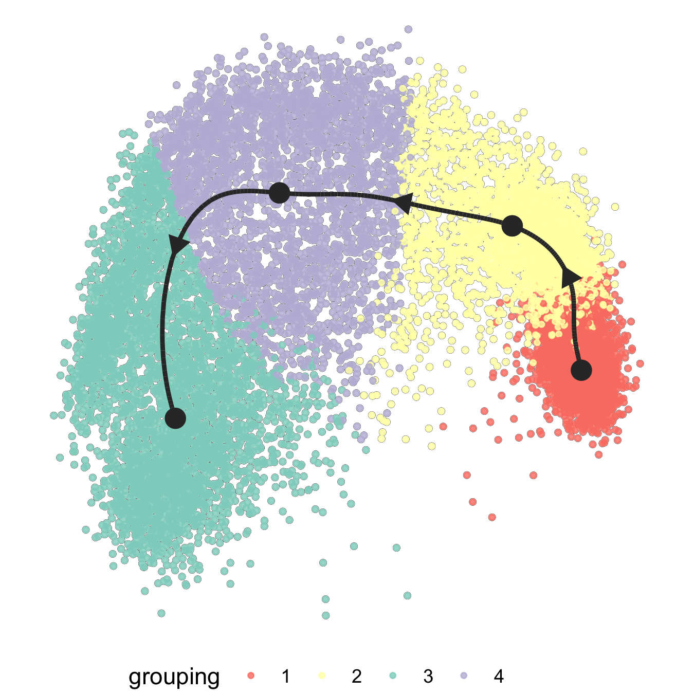
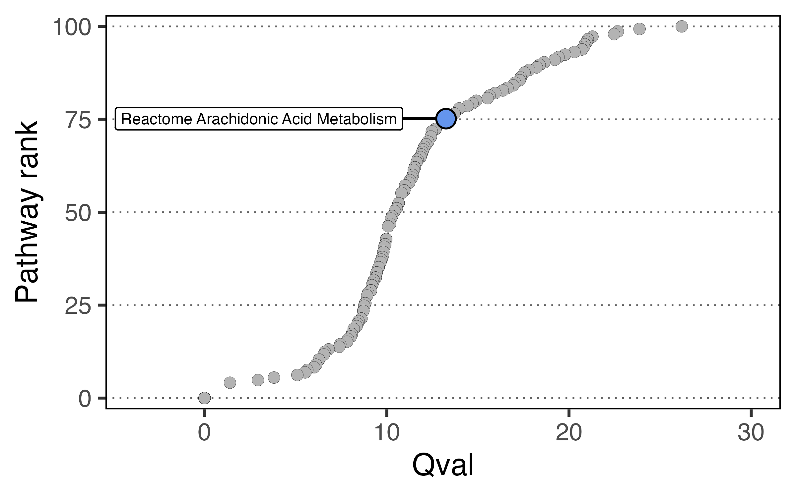

Comparing pathways across pseudotime with SCPA
Here we’re going to look at tracking gene set changes across a pseudotime trajectory. To do this, we’ll replicate some data from our recent paper where we characterised the transcriptional reprogramming of metabolic pathways after activation.
Let’s load in a few packages to start
library(SCPA)
library(Seurat)
library(dyno)
library(tidyverse)
library(magrittr)
library(ComplexHeatmap)
library(circlize)And load in our data. This is taken from our naive CD4+ T cell dataset that you can access here
load("naive_cd4.RData")We can see that the populations include both naive/effector T cells, and Tregs
DimPlot(naive_cd4, split.by = "Hour")
We’ll get rid of the Tregs because we’re just interested in naive T cell activation in the non Treg populations
naive_cd4 <- subset(naive_cd4, idents = "Treg", invert = T)We’ll then take the top 1000 most variable genes to model a trajectory
df <- as.matrix(naive_cd4[["RNA"]]@data)
var_genes <- names(sort(apply(df, 1, var), decreasing = TRUE))[1:1000]And then these steps are broadly taken from the dyno vignettes. We’re just taking expression data and adding it to the object so it’s able to be used in the infer_trajectory function.
counts <- Matrix::t(as(as.matrix(naive_cd4@assays$RNA@counts[var_genes,]), 'sparseMatrix'))
expression <- Matrix::t(as(as.matrix(naive_cd4@assays$RNA@data[var_genes,]), 'sparseMatrix'))
dataset_n4 <- wrap_expression(expression = expression,
counts = counts)And finally running the infer_trajectory function using slingshot as the modeller
model_n4 <- infer_trajectory(dataset_n4, method = ti_slingshot(), verbose = T)We can visualise the trajectory
plot_dimred(model_n4, "pseudotime", pseudotime = calculate_pseudotime(model_n4), hex_cells = F,
plot_trajectory = T, size_cells = 1, alpha_cells = 0.8) +
theme(aspect.ratio = 1)
Once we have our trajectory calculated, we can generate distinct nodes of cells across the trajectory to use as an input for SCPA. To generate the nodes, we can use the group_onto_nearest_milestones function, which assigns each cell to a node based on it’s pseudotime value.
We can then visualize the nodes that are calculated across the trajectory.
plot_dimred(model_n4, grouping = group_onto_nearest_milestones(model_n4), hex_cells = F,
plot_trajectory = T, size_cells = 1, alpha_cells = 0.8) +
theme(aspect.ratio = 1)
And extract the cells based on this grouping
mile_group <- data.frame(group_onto_nearest_milestones(model_n4)) %>%
set_colnames("milestone") %>%
rownames_to_column("cell")Once we have the pseudotime groupings, we can add this information to the Seurat object.
naive_cd4$milestone <- mile_group$milestoneWe then need to extract expression matrices for all the cells across the distinct nodes, so we effectively have 4 populations across the trajectory. We can use these expression matrices to assess pathways across the 4 nodes.
We can loop the seurat_extract function to get expression matrices for all cells in each population.
cd4_pseudo <- list()
for (i in 1:4) {
cd4_pseudo[[i]] <- seurat_extract(naive_cd4, meta1 = "milestone", value_meta1 = i)
}Now all the hard work is done, we just need to give this information to SCPA to analyse pathways over pseudotime, after defining the pathways
pathways <- "combined_metabolic_pathways.csv"
cd4_metabolism <- compare_pathways(cd4_pseudo, pathways)All done. Let’s plot the data (some annotations have been added later to highlight pathways, but we can see the final heatmap from Fig4B in our paper)
cd4_metabolism <- cd4_metabolism %>%
data.frame() %>%
select(Pathway, qval) %>%
column_to_rownames("Pathway")
col_hm <- colorRamp2(colors = c("white", "red"), breaks = c(0, max(mstone_out)))
Heatmap(t(cd4_metabolism),
name = "Qvalue",
col = col_hm,
border = T,
rect_gp = gpar(col = "white", lwd = 0.1),
heatmap_height = unit(2, "cm"),
show_column_dend = F,
show_row_names = F,
show_column_names = F)
We can also extract a single pathway to highlight its rank in the analysis using the plot_rank function:
cd4_metabolism <- rownames_to_column(cd4_metabolism, "Pathway")
plot_rank(cd4_metabolism,
"reactome_arachidonic",
label_size = 2)